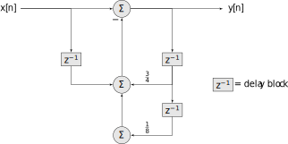

Lecture 2
Modeling and Characterization of Signals and Systems
2025-08-11
Today’s lecture is a review of material from ECE 2714. We will review the modeling and characterization of continuous-time and discrete-time signals and systems.
Signals
Signals are modeled as functions \(f: A \rightarrow B\) where \(A\) and \(B\) are sets.
Examples of some commonly encountered signals:
\(A\in \mathbb{R}\), \(B\in \mathbb{R}\): CT (Analog) signals
\(A\in \mathbb{Z}\), \(B\in \mathbb{R}\): DT real-valued signals
\(A\in \mathbb{Z}\), \(B\in \mathbb{C}\): DT complex-valued signals
\(A\in \mathbb{R}\), \(B\in \mathbb{R}^2\): two-channel CT (Analog Stereo) signals
To model signals we can build them up from primitive signals using transformations and combinations.
Some examples of primitive CT signals:
\(\delta(t)\), the delta function
\(u(t)\), the step function
\(e^{st}\; s\in\mathbb{C}\), the complex exponential
Recall the important relations for the complex exponential. Let \(s = \alpha + j\beta\), where \(\alpha, \beta \in \mathbb{R}\), then
\[e^{st} = e^{(\alpha + j\beta)t} = e^{\alpha t}\, e^{j\beta t} = e^{\alpha t}\left(\cos(\beta t) + j\sin(\beta t) \right)\]
By combining primitive signals we can create other signals. For example, the cosine function can be written as the weighted, linear combination of two complex exponentials
\[\cos(\omega t) = \frac{1}{2} e^{j\omega_0 t} + \frac{1}{2} e^{-j\omega_0 t}\]
A similar example is the Fourier Series representation of periodic CT signals, \(x(t)\), that meet the Direchlet conditions. It is an infinite weighted, linear combination of complex exponentials
\[x(t) = \sum\limits_{k = -\infty}^{\infty} a_k\, e^{jk\omega_0\, t}\]
We can also think about decomposing complex signals into primitive functions rather than building them up. Recall the CT Fourier decomposition (transform) of a signal \(x(t)\) is given by the improper, definite integral:
\[X(\omega) = \int\limits_{-\infty}^{\infty} x(t) e^{j\omega\, t}\; dt\]
which applies to many, but not all, signals.
Some example primitives for DT signals are:
\(\delta[n]\), the discrete delta function
\(u[n]\), the discrete unit step
\(z^n,\; z\in\mathbb{C}\), the complex exponential
Recall the DT complex exponential can be written as follows. Let \(z = r\, e^{j\theta}, \, r,\theta\in\mathbb{R}\), then
\[z^n = \left( r\, e^{j\theta} \right)^n = r^n\, e^{j\theta\, n} = r^n\left(\cos(\theta\, n) + j\sin(\theta\, n) \right)\]
Note: the type of signal, DT or CT, real-valued or complex valued, etc. can usually be inferred. To make this easier we use square brackets \([]\) to define DT signals and parenthesis \(()\) to define CT signals.
As before, we can construct more complex DT signals by taking products and weighted linear combinations of these primitive signals, for example:
\(\left(\gamma\right)^n\; u[n],\; \gamma\in\mathbb{R}\)
\(\left(\gamma\right)^n\,\cos(\omega_0 n)\; u[n],\; \gamma,\omega_0\in\mathbb{R}\)
In many cases the same signals can be expressed in different forms. In the last example above
\[\left(\gamma\right)^n\,\cos(\omega_0 n)\; u[n] = \left(z\right)^n + \left(z^*\right)^n\]
where \(z = \frac{\gamma}{2}\, e^{j\theta}\).
The corresponding Fourier decomposition for a DT signal \(x[n]\) is
\[X(\omega) = \sum\limits_{-\infty}^{\infty} x[n] e^{j\omega\, n}\]
a periodic function in \(2\pi\), which may or may not exist for any given signal of interest.
Major classifications of signals are:
casual, anti-causal, or neither
periodic or aperiodic
even, odd, or neither
energy, power, or neither
Systems
Systems either
produce signals
measure signals
transform signals (inputs) into other signals (outputs)
CT systems transform CT signals to CT signals.
DT systems transform DT signals to DT signals.
Hybrid systems convert between CT and DT signals.
Major classifications of systems are:
memory-less or dynamic
casual or non-causal
invertable or non-invertable
BIBO stable or unstable
time-varying or time-invariant
linear or nonlinear
The focus of ECE 2714 and this course is Linear, Time-Invariant (LTI) systems in CT and DT.
CT systems are in general represented by differential equations, e.g. the driven, damped pendulum
\[a\ddot{y} + b\dot(y) + c\sin(y) = x(t)\]
CT LTI systems, stable or unstable, can be represented by
linear, constant-coefficient differential equations (LCCDE) with zero initial conditions
impulse response \(h(t)\)
block diagram
Eigenvalue or Transfer Function \(H(s)\) (this concept is developed more in this course)
Stable CT LIT systems can be also be represented by their frequency response
\[H(j\omega) = \frac{Y(j\omega)}{X(j\omega)} = \mathcal{F} \left\{ h(t) \right\}\]
DT systems can in general be represented by difference equations, e.g. logistic equation
\[y[n+1] = a\, x[n]\, (1-x[n])\]
DT LTI systems, stable or unstable, can be represented by
linear, constant-coefficient difference equations (LCCDE) with zero auxiliary conditions
impulse response \(h[n]\)
block diagram
Eigenvalue or Transfer Function \(H(z)\) (this is developed more in this course)
Stable DT LTI systems can also be represented by their frequency response
\[H\left(e^{j\omega}\right) = \frac{Y\left(e^{j\omega}\right)}{X\left(e^{j\omega}\right)} = \mathcal{F}\left\{ h[n] \right\}\]
ECE 2714 leaves open two major questions:
how do we deal with signals that do not have Fourier transforms
(related) how do we deal with unstable systems
The first question is seemingly not that important we signals without Fourier transforms grow faster than is practically useful.
The second question is more relevant since we might want to know
how do we prevent unstable systems when designing
how can we stabilize an unstable system
The first and second questions are related since the impulse response \(h(t), h[n]\) of unstable systems do not have Fourier transforms.
We will address these issues this semester by building on two aspects of ECE 2714 only lightly covered:
Laplace Transform
Z Transform
Example Problems
Given the following LCCDE using operator notation for time-derivatives, determine the impulse response, \(h(t)\) \[D^3y + 6D^2y + 11Dy + 6y = Dx + x\] Solution: We note \[Q(D) = D^3 + 6D^2 + 11D + 6 = (D+1)(D+2)(D+3)\] \[P(D) = 0D^2 + D + 1\] The homogeneous solution is of the form \[y_h(t) = C_1e^{-t} + C_2e^{-2t} + C_3e^{-3t}\] We will also need tthe first and second derivatives: \[D y_h(t) = -C_1e^{-t} -2 C_2e^{-2t} -3 C_3e^{-3t}\] \[D^2 y_h(t) = C_1e^{-t} +4C_2e^{-2t} +9 C_3e^{-3t}\] Using the special initial conditions \(y_h(0) = 0\), \(D y_h(0) = 0\), \(D^2 y_h(0) = 1\) we obtain the system of equations: \[\begin{bmatrix} 1 & 1 & 1 \\ -1 & -2 & -3 \\ 1 & 4 & 9 \end{bmatrix} \begin{bmatrix} C_1 \\ C_2 \\ C_3 \end{bmatrix} = \begin{bmatrix} 0 \\ 0 \\ 1 \end{bmatrix}\] Solving this gives the constants \(C_1 = \frac{1}{2}\), \(C_2 = -1\), \(C_3 = \frac{1}{2}\). The form of the impulse response is \[\begin{aligned} h(t) & = b_0\delta(t) + \left[ P(D) y_h(t) \right] u(t) \\ & = \left[-\frac{1}{2} e^{-t} + 2e^{-2t} - \frac{3}{2}e^{-3t} + \frac{1}{2}e^{-t} - 2e^{-2t} + \frac{1}{2}e^{-3t} \right] u(t) \\ & = \left[e^{-2t} - e^{-3t}\right] u(t) \end{aligned}\] Note the term in front of \(e^{-t}\) is zero. Why? We will see that Laplace gives us intuition about solutions like this and in many cases simplifies the analysis.
Find the impuse response that corresponds to the block diagram

Block Diagram for example. Solution:
reading the block diagram \[y[n] = -\frac{3}{4} y[n-1] - \frac{1}{8} y[n-2] + x[n] - x[n-1]\]
putting into standard form \[y[n+2] + \frac{3}{4} y[n+1] + \frac{1}{8} y[n] = x[n+2] - x[n+1]\]
Note \[Q(E) = E^2 + \frac{3}{4}E + \frac{1}{8} = \left(E + \frac{1}{2}\right)\left(E + \frac{1}{4}\right)\] \[P(E) = E^2 - E + 0\]
the homogeneous form is then \[y_h[n] = C_1 \left(-\frac{1}{2}\right)^n + C_2\left(-\frac{1}{4}\right)^n\]
the impulse response is \[h[n] = \frac{a_2}{b_2}\delta[n] + y_h[n]\, u[n]\]
since \(a_2 = 0, b_2 = \frac{1}{8}\) then \[h[n] = C_1 \left(-\frac{1}{2}\right)^n u[n] + C_2\left(-\frac{1}{4}\right)^n u[n]\]
to find the constants we need two values of \(h\), from the recursive form \[\begin{aligned} h[n] &= -\frac{3}{4} h[n-1] - \frac{1}{8} h[n-2] + \delta[n] - \delta[n-1]\\ h[0] &= -\frac{3}{4} h[-1] - \frac{1}{8} h[-2] + \delta[0] - \delta[-1] = 1 = C_1 + C_2\\ h[1] &= -\frac{3}{4} h[0] - \frac{1}{8} h[-1] + \delta[1] - \delta[0] = -\frac{7}{4} = -\frac{1}{2} C_1 -\frac{1}{4} C_2\\ \end{aligned}\] This implies \(C_1 = 6\) and \(C_2 = -5\).
the final solution is then \[h[n] = 6 \left(-\frac{1}{2}\right)^n u[n] -5 \left(-\frac{1}{4}\right)^n u[n]\]